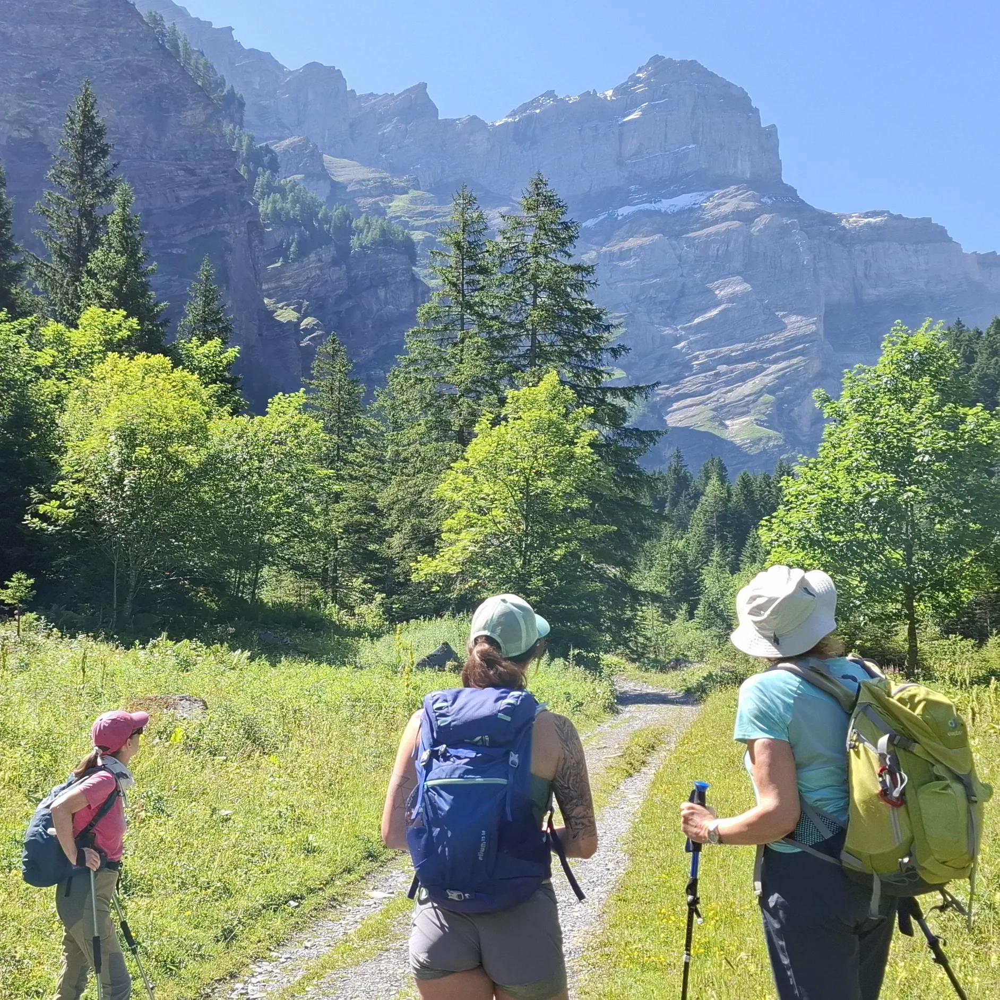
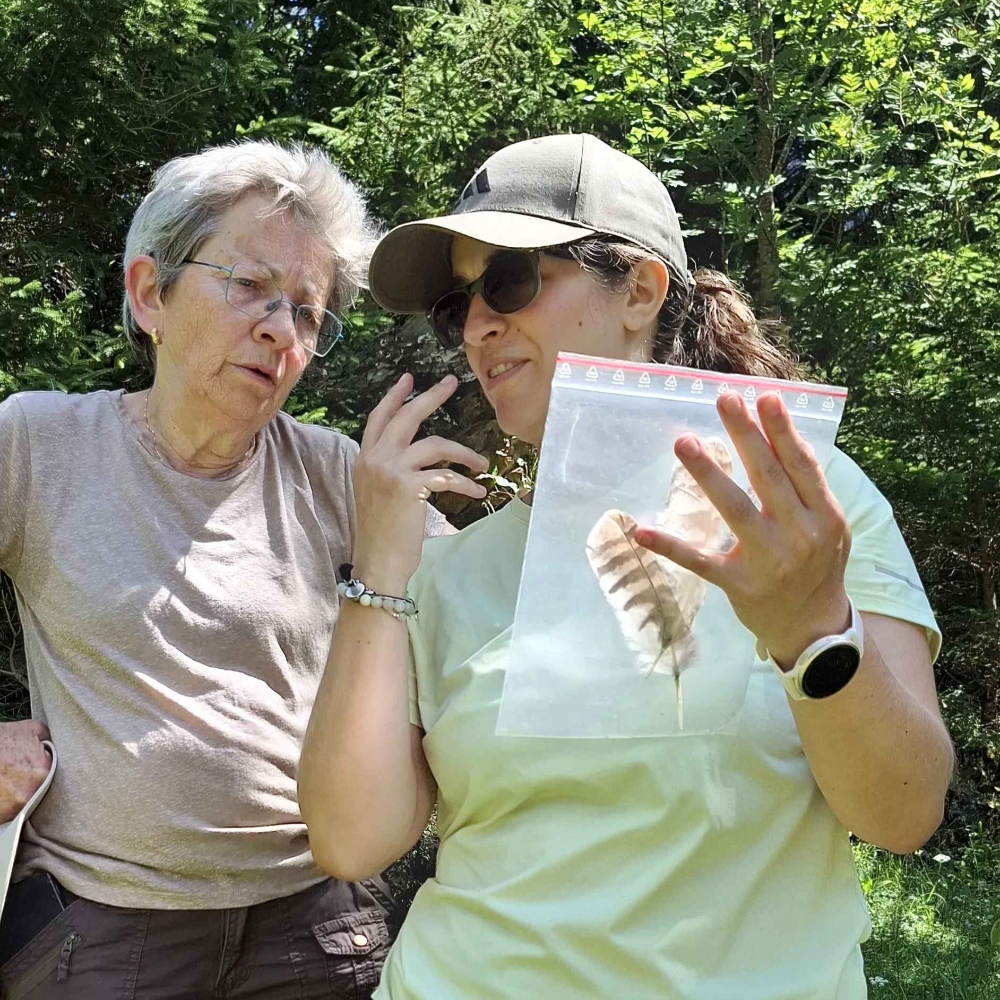
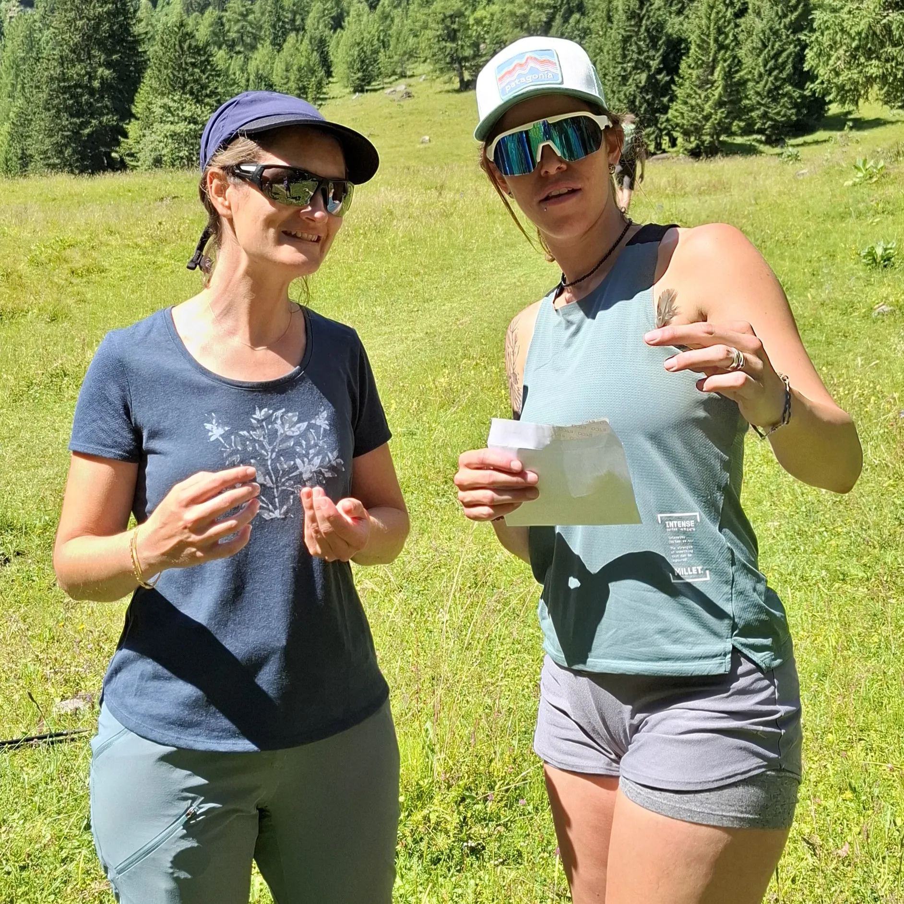
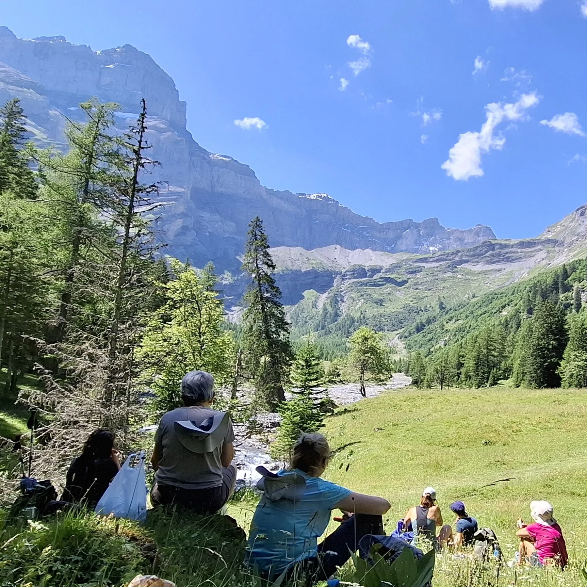
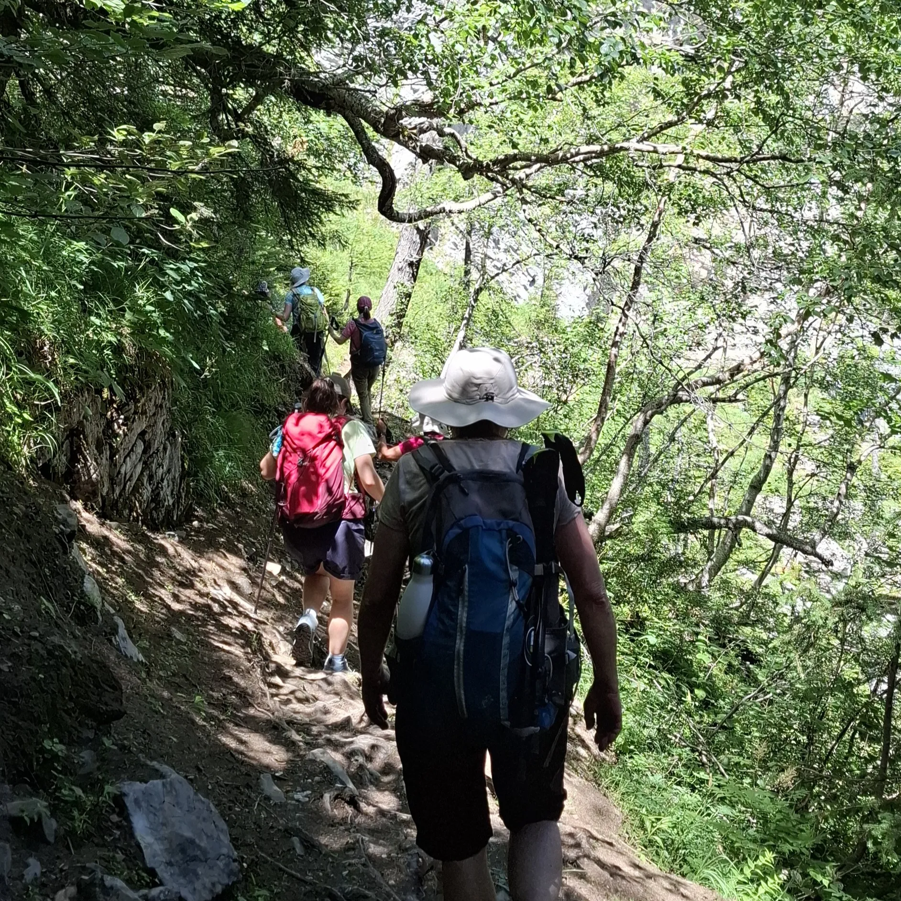
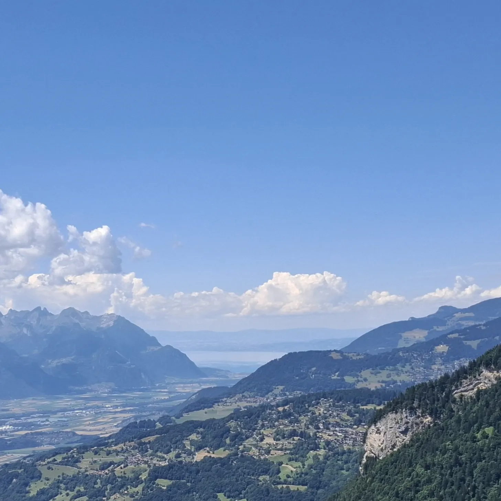

Au départ des Plans-sur-Bex, j’ai guidé un groupe le long de l’Avançon pour atteindre de Vallon de Nant. Un petit Vallon de 14 km² cachant des merveilles. 🌱
Nous les avons découvertes progressivement, flore, oiseaux et histoire géologique. Dans le cadre d’animations, les participantes ont observé des plumes d’oiseaux au propriétaire mystérieux, l'œuvre de l'érosion avec le Trou à l’ours, les sommets composants ce cirque avec entre autres la chaîne des Muverans et au point culminant, un splendide panorama ouvert sur le Lac Léman. 🏞️ Pour illuminer cette journée, le soleil nous a accompagné tout du long ! ☀️
Autant de thèmes que d'ambiances différentes durant cette randonnée longeant le ruisseau, traversant une forêt 🌲 puis gagnant de la hauteur entre les rochers. Le tout, toujours accompagné de sourires et de bonne humeur. Merci à toutes pour cette belle journée en montagne 😄
Cette randonnée s’est organisée en collaboration avec Passrando que je remercie également.





